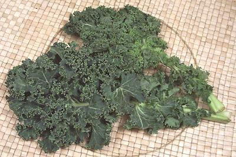
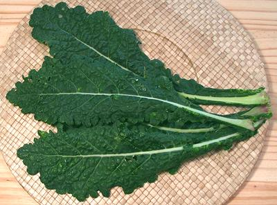
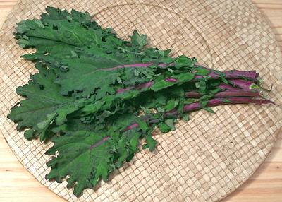
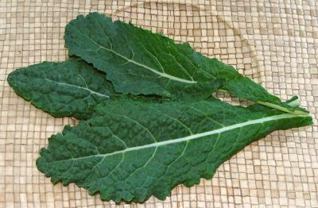
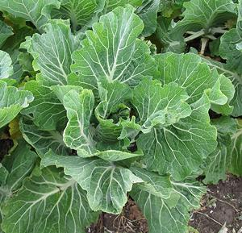

Curly KaleBlack / Tuscan KaleRed / Red Russian KaleDinosaur KalePortuguese Kale / Sukuma Wiki |
[Brassica oleracea Group Acephala]
Kale was well known in Europe before Roman times and until the Renaissance was the predominant type of cabbage in Europe. In fact it was the dominant green, particularly valued for being available well into winter. Genetically, kale is very closely related to Collard Greens. For more on Cabbage Greens Types of Kale- Some important varieties are:
Buying:Curly Kale can be found in practically any supermarket in North America. Vast amounts are grown in California and shipped everywhere. Black and Red kale are best found in the Farmer's Markets which abound here in Southern California.Storage:Loosely wrapped Kale will keep in the refrigerator for more than a week, but will gradually lose its vitamin content.Prep:Wash just before use. Kale is float washed as you would spinach because the textures tend to hold grit and mud. The stems are usually discarded because they are very tough. Fold the two sides against each other and the stem will be easy to cut away.Cooking:Kale, particularly curly kale, takes a fair amount of cooking, a reason why it often appears in soups. Other Kales may cook more quickly.Health & Nutrition:Kale is considered the highest of all vegetables for nutrition per calorie. Kale is very high in Beta Carotene, Vitamin K, Vitamin C, Lutein, and Zeaxanthin, and fairly high in Potassium, Phosphorus, Magnesium and Calcium.When kale is chopped or chewed, enzymes produce Sulforaphane which is considered a potent anti-cancer substance, which also helps with diabetes and is antimicrobial. It is also thought to help inhibit heart inflammation. Persons taking warfarin or other anti-coagulants are cautioned against eating Kale due to its high vitamin K content. |
cb_kalez 100416 - www.clovegarden.com
©Andrew Grygus - agryg@clovegarden.com - All photos on this
page not otherwise attributed are © cg1.
Linking to and non-commercial use of this page permitted.